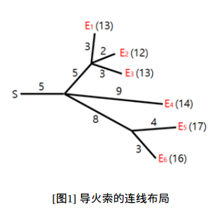
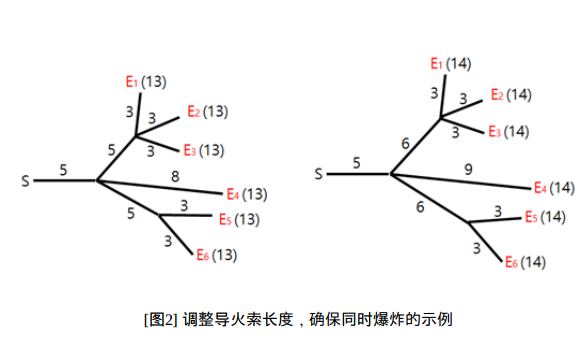

烟花表演是最引人注目的节日活动之一。在表演中，所有的烟花必须同时爆炸。为了确保安
全，烟花被安置在远离开关的位置上，通过一些导火索与开关相连。导火索的连接方式形成
一棵树，烟花是树叶，如[图1]所示。火花从开关出发，沿导火索移动。每当火花抵达一个分
叉点时，它会扩散到与之相连的所有导火索，继续燃烧。导火索燃烧的速度是一个固定常
数。[图1]展示了六枚烟花{E1,E2...E6 }的连线布局，以及每根导火索的长度。图中还标
注了当在时刻 从开关点燃火花时，每一发烟花的爆炸时间。

Hyunmin为烟花表演设计了导火索的连线布局。不幸的是，在他设计的布局中，烟花不一定
同时爆炸。我们希望修改一些导火索的长度，让所有烟花在同一时刻爆炸。例如，为了让[图
1]中的所有烟花在时刻 13爆炸，我们可以像[图2]中左边那样调整导火索长度。类似地，为
了让[图1]中的所有烟花在时刻 14爆炸，我们可以像[图2]中右边那样调整长度。

修改导火索长度的代价等于修改前后长度之差的绝对值。例如，将[图1]中布局修改为[图2]
左边布局的总代价为6 ，而将[图1]中布局修改为[图2]右边布局的总代价为 5.
导火索的长度可以被减为0 ，同时保持连通性不变。
给定一个导火索的连线布局，你需要编写一个程序，去调整导火索长度，让所有的烟花在同
一时刻爆炸，并使得代价最小。